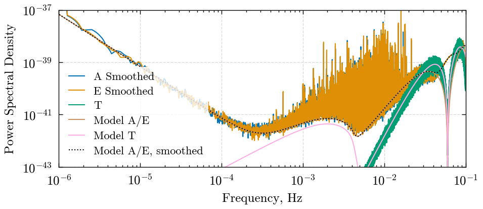
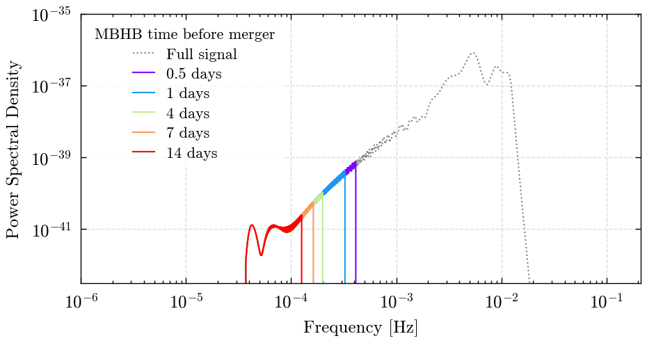
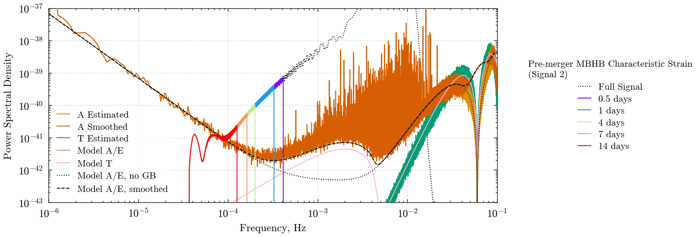

Plotting PSDs#
In this notebook we generate the Figure 1 plot for use in the paper. The PSDs and characteristic strains have been generated in estimate_psds.ipynb and characteristic_strain.ipynb respectively, so we will load them in
from pycbc.types import load_frequencyseries
import numpy as np
from matplotlib import pyplot as plt
plt.style.use('../paper.mplstyle')
paper_plot_dir = '../paper/images/dataset'
import ldc.lisa.noise.noise as ldc_noise
import sys
import os
search_dir = os.path.abspath("../search")
if search_dir not in sys.path:
sys.path.insert(0, search_dir)
import plotting_utils
/home/gareth.cabourndavies/environments/env_lisa_premerger_sangria/lib/python3.11/site-packages/pycbc/types/array.py:36: UserWarning: Wswiglal-redir-stdio:
SWIGLAL standard output/error redirection is enabled in IPython.
This may lead to performance penalties. To disable locally, use:
with lal.no_swig_redirect_standard_output_error():
...
To disable globally, use:
lal.swig_redirect_standard_output_error(False)
Note however that this will likely lead to error messages from
LAL functions being either misdirected or lost when called from
Jupyter notebooks.
To suppress this warning, use:
import warnings
warnings.filterwarnings("ignore", "Wswiglal-redir-stdio")
import lal
import lal as _lal
# This cell contains the information about input files
estimated_format = '{channel}_sangria_hm_PSD.txt'
smoothed_estimated_format = '{channel}_sangria_hm_SMOOTHED_PSD.txt'
segment_duration = 1576800
# Load in PSD files
A_estimate = load_frequencyseries(estimated_format.format(channel='A'))
E_estimate = load_frequencyseries(estimated_format.format(channel='E'))
T_estimate = load_frequencyseries(estimated_format.format(channel='T'))
A_smoothed = load_frequencyseries(smoothed_estimated_format.format(channel='A'))
E_smoothed = load_frequencyseries(smoothed_estimated_format.format(channel='E'))
AE_model = load_frequencyseries('model_AE_PSD.txt')
T_model = load_frequencyseries('model_T_PSD.txt')
AE_model_smoothed = load_frequencyseries('model_AE_SMOOTHED_PSD.txt')
Now lets also get the PSD model which doesnt include GBs - this matches the one used in the zero latency filter paper. We don’t use this beyond this plot, so dont need to save it
sangria_model_freqs = A_smoothed.sample_frequencies
nm_nogb = ldc_noise.get_noise_model("sangria", sangria_model_freqs, wd=False)
ae_nogb = nm_nogb.psd(option="A")
t_nogb = nm_nogb.psd(option="T")
/home/gareth.cabourndavies/environments/env_lisa_premerger_sangria/lib/python3.11/site-packages/pycbc/types/array.py:390: RuntimeWarning: divide by zero encountered in divide
return self._data.__rtruediv__(other)
/home/gareth.cabourndavies/environments/env_lisa_premerger_sangria/lib/python3.11/site-packages/pycbc/types/array.py:435: RuntimeWarning: divide by zero encountered in power
return self._data ** other
/home/gareth.cabourndavies/environments/env_lisa_premerger_sangria/lib/python3.11/site-packages/pycbc/types/array.py:348: RuntimeWarning: invalid value encountered in multiply
return self._data * other
Now make the PSD plot
cycle = plt.rcParams['axes.prop_cycle'].by_key()['color']
width = plt.rcParams["figure.figsize"][0] * 1.5
height = plt.rcParams["figure.figsize"][1]
fig, ax = plt.subplots(1, figsize=(width, height))
ax.loglog(
A_smoothed.sample_frequencies,
A_smoothed,
c=cycle[0],
label='A Smoothed'
)
ax.loglog(
E_smoothed.sample_frequencies,
E_smoothed,
c=cycle[1],
label='E Smoothed'
)
ax.loglog(
T_estimate.sample_frequencies,
T_estimate,
c=cycle[2],
label='T'
)
ax.loglog(
AE_model.sample_frequencies,
AE_model,
c=cycle[5],
label='Model A/E'
)
ax.loglog(
T_model.sample_frequencies,
T_model,
c=cycle[6],
label='Model T'
)
ax.loglog(
AE_model_smoothed.sample_frequencies,
AE_model_smoothed,
c='k',
linestyle=':',
label='Model A/E, smoothed'
)
ax.set_ylabel("Power Spectral Density")
ax.set_xlabel("Frequency, Hz")
leg1 = ax.legend(loc='lower left')
ax.set_ylim([1e-43, 1e-37])
ax.set_xlim([1e-6, 1e-1])
ax.grid(zorder=-100)

Adding pre-merger MBHB characteristic strain#
But we want to get a bit more information out: do Massive black hole binaries clash with the galactic binary background when analysing them pre-merger?
So lets have a look at the charcteristic strain. First we load it in:
import h5py
cutoff_days = [0.5, 1, 4, 7, 14]
example_signal_number = 2
with h5py.File('characteristic_strain/collected_characteristic_strain.hdf', 'r') as ccsf:
freqs = ccsf['frequencies'][:]
valid = freqs > 0
freqs = freqs[valid]
full_char = np.sqrt(ccsf[str(example_signal_number)]['0_A'][valid] ** 2 + ccsf[str(example_signal_number)]['0_E'][valid] ** 2)
char = {
days: np.sqrt(ccsf[str(example_signal_number)][str(days).replace('.','p') + '_A'][valid] ** 2 +
ccsf[str(example_signal_number)][str(days).replace('.','p') + '_E'][valid] ** 2)
for days in cutoff_days
}
# days before merger to use as cutoffs
cutoff_days = [0.5, 1, 4, 7, 14]
time_before_colors = plotting_utils.get_colors(cutoff_days)
time_before_colors[0] = 'k'
Now plot on its own to check that it looks sensible. Note that we are transforming compared to the previous notebook so that it can sit on the same plot as the PSDs. Add in the plots with the pre-merger cutoffs.
width = plt.rcParams["figure.figsize"][0] * 1.5
height = plt.rcParams["figure.figsize"][1] * 1.25
fig, ax = plt.subplots(1, figsize=(width, height))
ax.loglog(
freqs,
full_char ** 2 / freqs,
c='k',
label='Full signal',
linestyle=':',
zorder=-100,
alpha=0.5
)
for days in cutoff_days:
ax.loglog(
freqs,
char[days] ** 2 / freqs,
color=time_before_colors[days],
label=f'{days} days',
)
ax.set_ylabel("Power Spectral Density")
ax.set_xlabel("Frequency [Hz]")
ax.grid()
ax.legend(title='MBHB time before merger', loc='upper left')
ax.set_xlim(left=1e-6)
ax.set_ylim([3e-43, 1e-35])

PSDs money plot#
Now lets have a look at the PSDS plotted together with the characteristic strains
width = plt.rcParams["figure.figsize"][0] * 2
height = plt.rcParams["figure.figsize"][1] * 1.5
fig, ax = plt.subplots(1, figsize=(width, height))
ax.loglog(
A_estimate.sample_frequencies,
A_estimate,
c=cycle[1],
label='A Estimated',
zorder=10
)
# ax.loglog(
# E_estimate.sample_frequencies,
# E_estimate,
# c=cycle[1],
# label='E Estimated',
# zorder=10
# )
ax.loglog(
A_smoothed.sample_frequencies,
A_smoothed,
c=cycle[3],
label='A Smoothed',
zorder=15
)
# ax.loglog(
# E_smoothed.sample_frequencies,
# E_smoothed,
# c=cycle[3],
# label='E Smoothed',
# zorder=20
# )
ax.loglog(
T_estimate.sample_frequencies,
T_estimate,
c=cycle[2],
label='T Estimated',
zorder=6
)
ax.loglog(
AE_model.sample_frequencies,
AE_model,
c=cycle[5],
label='Model A/E',
zorder=30
)
ax.loglog(
T_model.sample_frequencies,
T_model,
c=cycle[6],
label='Model T',
zorder=25
)
ax.loglog(
sangria_model_freqs,
ae_nogb,
c='k',
linestyle=':',
label='Model A/E, no GB',
zorder=35
)
ax.loglog(
AE_model_smoothed.sample_frequencies,
AE_model_smoothed,
c='k',
linestyle='--',
label='Model A/E, smoothed',
zorder=40
)
ax.set_ylabel("Power Spectral Density")
ax.set_xlabel("Frequency, Hz")
leg1 = ax.legend(loc='lower left')
line2 = []
labels2 = []
full_h_c= load_frequencyseries(
f'characteristic_strain/characteristic_strain_{example_signal_number}_full.txt'
)
ax.loglog(
freqs,
full_char ** 2 / freqs,
c='k',
linestyle=':',
zorder=-100,
)
line2.append(
ax.loglog(
[],
[],
color='k',
linestyle=':',
)[0]
)
labels2.append('Full Signal')
for days in cutoff_days:
ax.loglog(
freqs,
char[days] ** 2 / freqs,
color=time_before_colors[days],
label=f'{days} days',
zorder=40+days
)
line2.append(
ax.loglog(
[],
[],
color=time_before_colors[days],
)[0]
)
labels2.append(f'{days} days' if days > 0 else 'Full Signal')
leg2 = ax.legend(
line2,
labels2,
loc="center left",
title=f"Pre-merger MBHB Characteristic Strain\n(Signal {example_signal_number})",
bbox_to_anchor=(1.05,0.5),
)
ax.add_artist(leg1)
ax.set_ylim([1e-43, 1e-37])
ax.set_xlim([1e-6, 1e-1])
ax.grid(zorder=5)
fig.savefig(f'{paper_plot_dir}/figure_1_psds_with_sources.png')

Well thats nice, until around 3-4 days before merger, (for this signal) the MBHB strain is completely separate from the galactic binary foreground. Even at 0-5 & 1 day before merger, it is well below the MBHB signal.
This is important to show that this isnt a ‘global fit’ problem, and we can do this search without significantly worrying about removing the galactic white dwarf binary foregound from the data 🥳🎉🎊